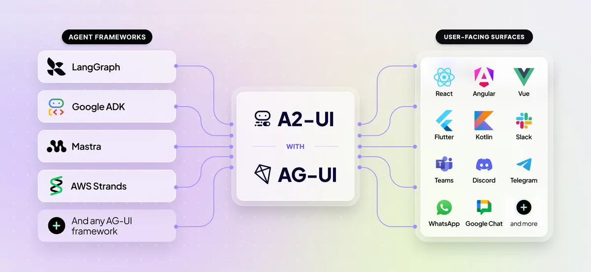
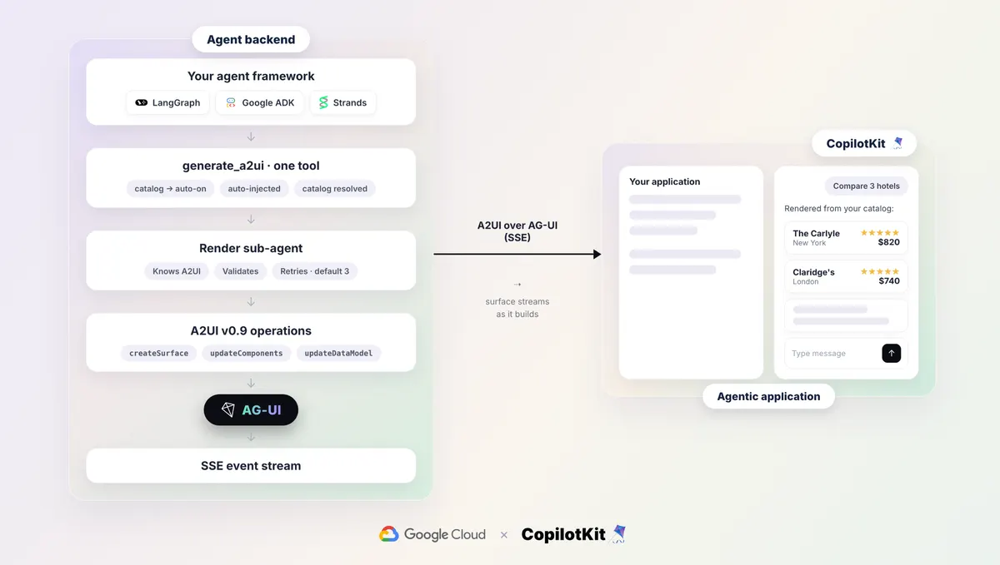

代理開始長 UI：A2UI 一套宣告，框架與介面打通
導讀原文：Google Developers Blog〈Build Generative UI Apps with A2UI & CopilotKit Agents〉——開發者教學，含架構圖與接法範例
18 個基本目錄的通用原語（版面／顯示／輸入）
2 件套A2UI 管宣告、AG-UI 管傳輸
4 框架ADK／LangChain／Mastra／Strands 示範接法
1 呼叫代理端只多一個 generate_a2ui 工具
代理回一堆文字叫人自己去訂，體驗就斷在那。生成式 UI 讓代理在對話裡直接渲染可互動介面——Google 的答案是宣告式標準 A2UI。

光譜兩端：受控組合到開放生成
生成式 UI 有光譜：受控端由代理挑選預建元件與資料，品牌安全但客製有限；開放端代理直接回 HTML/JS/Draft 程式跑在沙箱 iframe，什麼都畫得出來，但偏離設計系統、還要執行模型寫的碼。A2UI 兩端都做，宣告式組合是最常用的模式。
基本目錄刻意精簡（18 個原語），正式產品多半自訂目錄——例如代理填座標、前端渲染路線的即時地圖。前端工程師的角色從寫頁面變成定義積木。
資料怎麼流：A2UI over AG-UI

CopilotKit 建構在 AG-UI（Agent-User Interaction Protocol）上，負責把 A2UI 操作送達前端；使用者的操作再沿同一串流回傳。AG-UI 相容的框架接法一致——文中以 ag_ui_adk 把 Google ADK 代理包成 FastAPI endpoint。
帶走三件事
治理靠宣告式目錄。代理組積木而非生 HTML，品牌與安全都好管。
標準化換來可移植。換框架不換 UI 層，中間協定是投資點。
UI 成了 agent 的輸出格式。挑元件的判斷力會成為模型能力的一部分。
同一主題的其他館藏
導讀為本站編輯內容（AI 摘解自原文與館藏重點，非官方文件）；引述數據出自原文，圖解與小標為編輯整理（架構與流程圖為原文圖）。內容經對照原文的獨立事實審查後發布。